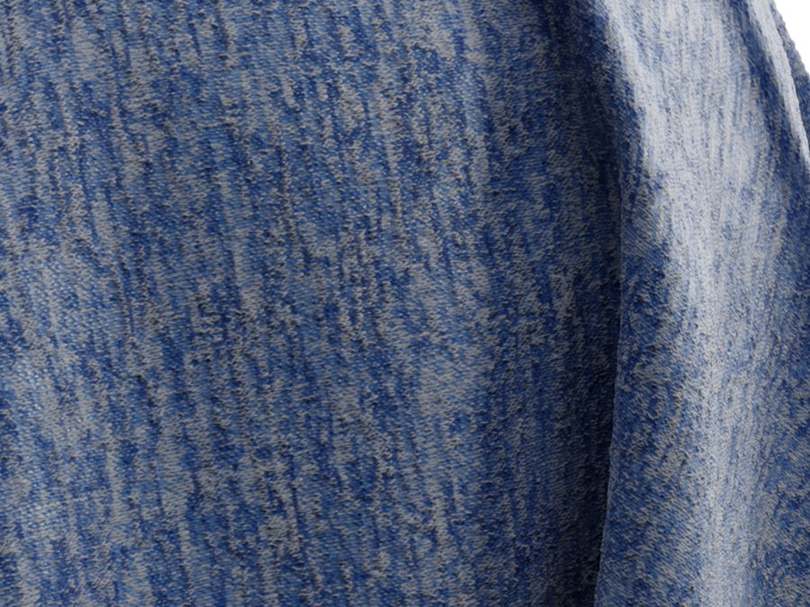
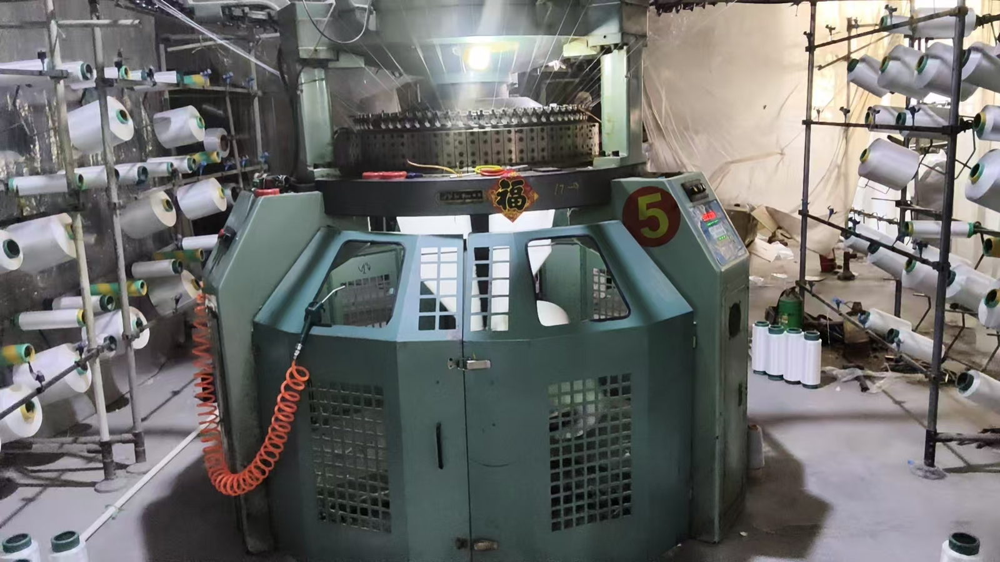

针织面料 · 定制加工
以织造经验，承接每一份定制需求
即墨区利晨针织厂拥有自有生产车间与针织设备，提供平纹、双面及其他针织面料的定制与加工。支持来样、来图、成分及克重定制，并可沟通打样。

车间实拍 · 针织大圆机
设备运转实拍（由工厂拍摄提供）
工厂实拍
自有车间与设备，灵活响应订单
工厂位于山东省青岛市即墨区通济街道办事处张家西城东村工业园，拥有自有生产车间和针织设备，在各类针织面料织造方面具备经验。具体交期、起订量和生产安排以沟通确认为准。
- 来样定制、来图定制
- 成分、克重、颜色与规格定制
- 支持打样，小批量与大批量需求均可沟通